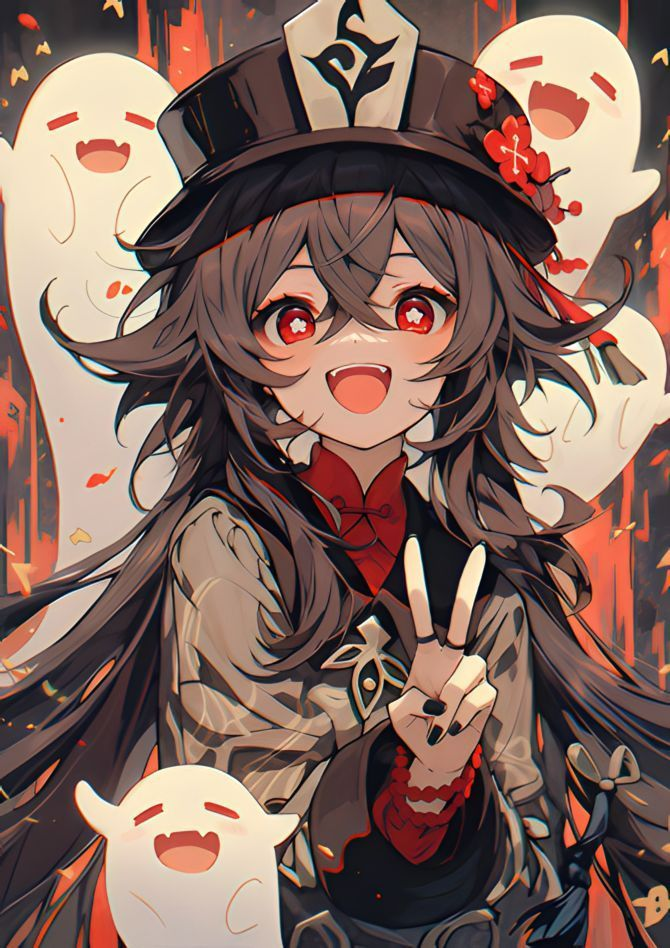
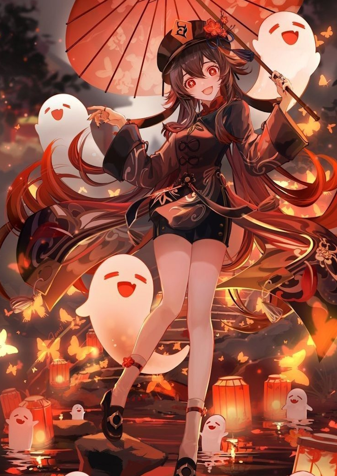
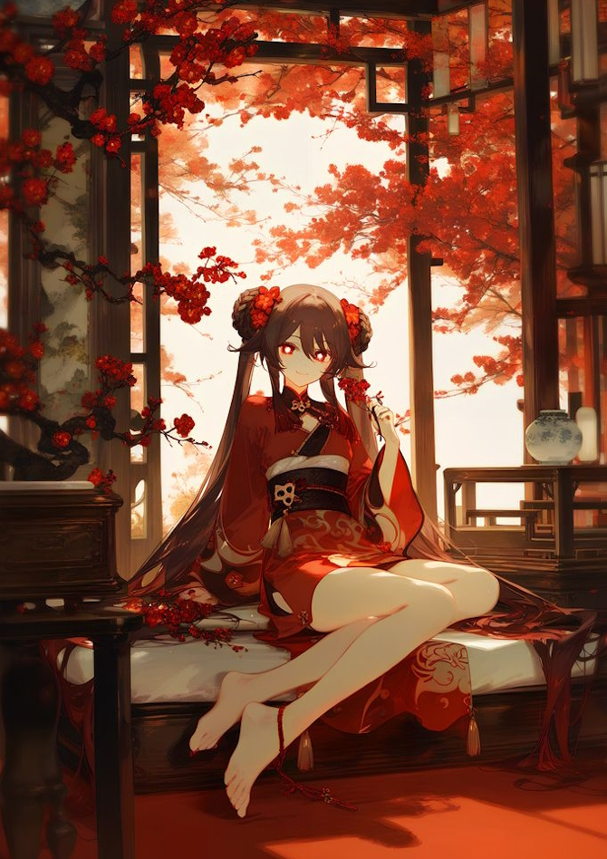

O charakteru

Rodinné dědictví Wangsheng
Hu Tao není jen ředitelkou Pohřebního ústavu Wangsheng – je živoucím mostem mezi generacemi, které před ní tuto pozici zastávaly. Její příběh začíná v temných chodbách ústavu, kde jako malá dívka trávila noci místo spánku, fascinovaná rituály, které ostatní děti děsily.

Dětství mezi dvěma světy
- V šesti letech měla své první setkání s duchem – starou paní Ming, která "pracovala" v ústavu ještě za dob prvního ředitele. Místo strachu malá Hu Tao projevila zvědavost: "Proč pořád nosíš ty samé šaty? Nemáš v duchovním světě obchody?"
- Její dědeček, 76. ředitel, brzy rozpoznal její talent. Místo hraček jí dával staré pohřební svitky a učil ji číst mezi řádky smrti. "V každém konci je nový začátek," opakoval jí, když ji učil základním rituálům.

Zkoušky dospívání
- V 10 letech už znala všechny tradiční pohřební formule zpaměti – a přidávala k nim své vlastní, často nevhodné verše. Její "Óda na rozbitý nočník" se stala noční můrou konzervativních zaměstnanců.
- Ve 13 letech vedla svůj první skutečný pohřeb – pro bezdomovce, který neměl rodinu. Její improvizovaná řeč o "cestě bez zavazadel" dojala i nejzatvrzelejší kritiky.